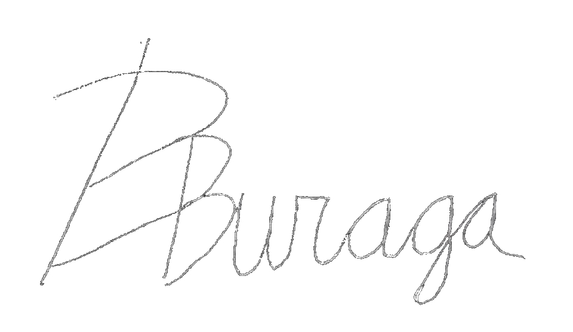

Letter From The Secretary-General
Dear prospective Delegates and Sponsor Teachers,
On behalf of Pacific Model United Nations, PacificMUN, it is my privilege to welcome you to our third iteration of our conference, scheduled for February 24th - 26th, 2017. Taking the leap from being a day conference to being a hotel conference, I endeavor for this conference to be one that is built with the essence of those who wish to make it happen.
Model United Nations is a simulation of the United Nations, in which students participate as representatives of countries in various UN committees. More than that, Model UN brings together some of the best, brightest, and most creative people that the world has to offer. It’s an opportunity to connect with like-minded youth, learn about international relations, debate about world issues, and meet new people. When I first took the leap to join a MUN conference, I did not know what to expect. Little did I know how it would have changed my life.
PacificMUN is built on three pillars: the educational aspect of Model UN, the affordability that we strive to maintain, and the social catalyst that we hope to be, creating relationships that last a lifetime. My hope is that PacificMUN will continue to be a leader in the world of Model United Nations, pushing the boundaries of what has been the status quo. Our committees, ranging from General Assemblies, to Regional Agencies, to Crisis Committees, will have something for everyone.
I have been involved in Model United Nations for three years, having the opportunity to be in a variety positions as a delegate, staff member, and on Secretariat teams. I served as the Under Secretary-General of Committees at PacificMUN 2015. I can say without a doubt that Model UN has given me countless opportunities that I still fail to fully comprehend the depth of. I hope that through this conference, you will meet people that will change your life, build skills that will develop you as a person, and receive opportunities that you have yet to imagine; because truly, hindsight is 20/20.
Kindest regards,
Bryan Buraga
Secretary-General
Pacific Model United Nations 2017